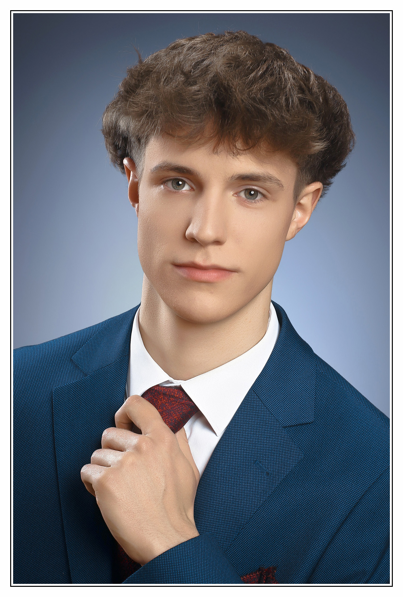

Kajári Levente István
13.c/ipit
Elérhetőségek:
Tel.:
+36702010268
E-mail:
kajari.levente@gmail.com
Általános Információk
Kajári Levente István vagyok, 19 éves, 13.c -s tanuló. Azért választottam az ipari informatikai szakirányt, mert mindig is érdekelt hogy mik történnek az elektronikai eszközökben és azok mögött, ezért úgy gondoltam, hogy ez a szak lesz számomra a legmegfelelőbb.
Kecskeméten születtem 2006.09.18-án és születésem óta Nagykőrösön élek. Szabadidőmben rengeteget sportolok azon belül is kosárlabdázok 11 éve.
Kandós tanulmányaim során adódott lehetőségem külső cégnél tölteni a nyári gyakorlatomat amit az akkor még aktívan működő elektronikai cégnél töltöttem ami a SIIX Hungary Kft. volt. Itt rengeteg újat tudtam megtanulni az elektronikai panelok sorozatgyártásáról.
A weboldalamon pedig az iskolában szerzett tanulmányaimról és a kisebb, nagyobb projektjeimről tartok bemutatót.